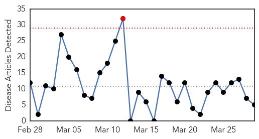
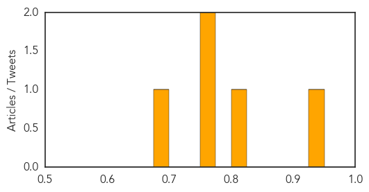
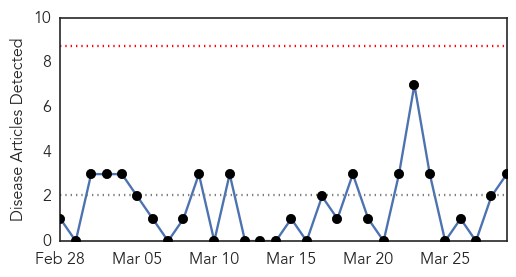
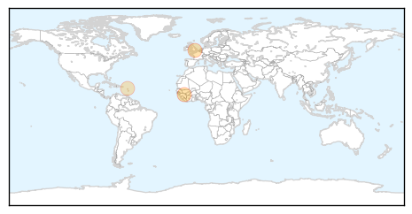
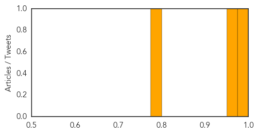

Influenza
30-Day Web Trend
1 alerts, 0 warnings

30-Day Twitter Trend
3 alerts, 0 warnings

Article Locations

Article Confidences
Top Articles:
Top Tweets:
-
No tweets found for Mar 29, 2015
Chikungunya
30-Day Web Trend
0 alerts, 0 warnings

30-Day Twitter Trend
0 alerts, 0 warnings

Article Locations
Article Confidences
Top Articles:
Top Tweets:
-
No tweets found for Mar 29, 2015